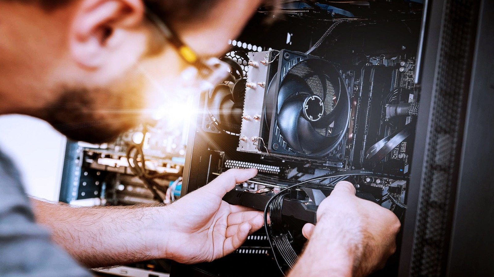

QUIENES SOMOS
Somos una empresa de informática que ofrecemos servicios de venta y reparación de ordenadores y otros dispositivos informáticos.
Nuestro equipo técnico está capacitado para diagnosticar y solucionar una amplia gama de problemas de hardware y software en ordenadores de escritorio,
portátiles, servidores, y dispositivos móviles.

QUE HACEMOS
Nos dedicamos a la venta de equipos, trabajamos con una variedad de marcas y modelos para satisfacer las necesidades específicas de cada
cliente, ya sea para uso personal, empresarial o institucional. Ofrecemos asesoramiento personalizado para ayudar a nuestros clientes a elegir el
equipo que mejor se adapte a sus requerimientos y presupuesto.

VENTA EN ESPAÑA
En nuestra empresa, nos enorgullece ofrecer un servicio de venta de ordenadores que abarca todo el territorio nacional. Con una amplia
selección de equipos de las principales marcas y modelos, estamos comprometidos en proporcionar a nuestros clientes soluciones informáticas de alta calidad
que se adapten a sus necesidades y presupuesto.